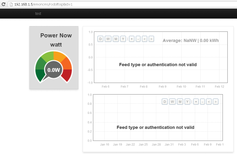

Hello i am new to emoncms , i have installed emoncms on windows pc .
I have created a public dashboard with some dummy data . While i am logged in i can run the dashboard and everything works fine , if i try to access the dashboard through the public url , 192.168.1.5/emoncms/myusername&id=1 either from another lan pc either from my pc, but without logging in first i can see the dashboard but no data on it and a message on the charts saying feed type or authentication not valid.
Can anyone please help ? 
Re: Public url cannot load data
Did you make the feeds 'public'?
Re: Public url cannot load data
hi
I encounter the same problem. I put some questions in the forum but still no answer.
do not know what else to do to fix it. The feed is as public.
Can anyone help me with this problem?
thanks
Camilo
Re: Public url cannot load data
Hi,
I think this has to do with the way the graphs are stored in the DB. In the dashboard table, you can see in the content field that all graphs use the ip address of the server. This means that when you access the dashboard from a pc outside you network, it can retrieve the data. You can easliy solve this problem by removing the ip address, ie changing src="http://192.168.x.xx/emoncms/vis/zoom? to src="/emoncms/vis/zoom?